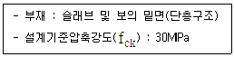
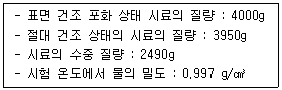
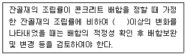
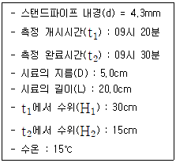
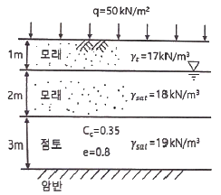
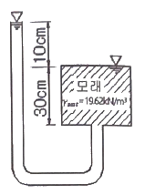
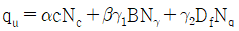

건설재료시험기사 (2021-09-12 기출문제)
1과목: 콘크리트공학
1. 콘크리트의 워커빌리티에 영향을 미치는 요인에 대한 설명으로 틀린 것은?
- 포졸란 혼화재를 사용하면 콘크리트의 점성을 개선하는 효과가 있어 워커빌리티가 좋아진다.
- 일반적으로 단위시멘트 사용량이 많은 부배합의 경우는 빈배합의 경우보다 워커빌리티는 좋아진다.
- 골재의 입도분포가 양호하고 입형이 둥글면 워커빌리티는 좋아진다.
- 같은 배합의 경우라도 온도가 높으면 워커빌리티는 좋아진다.
(정답률: 53%)

2. 고강도 콘크리트에 대한 일반적인 설명으로 틀린 것은?
- 단위 시멘트량은 소요의 워커빌리티 및 강도를 얻을 수 있는 범위 내에서 가능한 한 적게 되도록 시험에 의해 정하여야 한다.
- 잔골재율은 소요의 워커빌리티를 얻도록 시험에 의하여 결정하여야 하며, 가능한 작게 하도록 한다.
- 고강도 콘크리트의 설계기준압축강도는 보통콘크리트에서 40MPa 이상, 경량골재 콘크리트는 27MPa 이상으로 한다.
- 고강도 콘크리트의 워커빌리티 확보를 위해 공기연행제를 사용함을 원칙으로 한다.
(정답률: 57%)
3. 콘크리트를 제조할 때 재료의 계량에 대한 설명으로 틀린 것은?
- 계량은 시방 배합에 의해 실시하여야 한다.
- 유효 흡수율의 시험에서 골재에 흡수시키는 시간은 실용상으로 보통 15~30분간의 흡수율을 유효 흡수율로 보아도 좋다.
- 골재의 경우 1회 계량분의 계량 허용오차는 ±3% 이다.
- 혼화재의 경우 1회 계량분의 계량 허용오차는 ±2% 이다.
(정답률: 61%)
4. 프리스트레스트 콘크리트에 대한 설명으로 틀린 것은?
- 긴장재에 긴장을 주는 시기에 따라서 포스트텐션방식과 프리텐션방식으로 분류된다.
- 프리텐션방식에 있어서 프리스트레싱할 때의 콘크리트의 압축강도는 20MPa 이상이어야 한다.
- 프리스트레싱을 할 때의 콘크리트의 압축강도는 프리스트레스를 준 직후에 콘크리트에 일어나는 최대 압축 응력의 1.7배 이상이어야 한다.
- 그라우트 시공은 프리스트레싱이 끝나고 8시간이 경과한 다음 가능한 한 빨리 하여야 한다.
(정답률: 64%)
5. 경량골재 콘크리트에서 경량골재의 유해물 함유량의 한도로 틀린 것은?
- 경량골재의 강열감량은 5% 이하이어야 한다.
- 경량골재의 점토 덩이라 양은 2% 이하이어야 한다.
- 경량골재의 철 오염물 시험 결과, 진한 얼룩이 생기지 않아야 한다.
- 경량골재 중 굵은 골재의 부립률은 15% 이하이어야 한다.
(정답률: 44%)
6. 골재의 내구성 시험 중 황산나트륨에 의한 안정성 시험의 경우 조작을 5회 반복하였을 때 굵은 골재의 손실질량은 최대 얼마 이하를 표준으로 하는가?
- 4%
- 7%
- 12%
- 15%
(정답률: 64%)
7. 콘크리트의 압축강도(fcu)를 시험하여 거푸집널의 해체시기를 결정하고자 한다. 아래와 같은 조건일 경우 콘크리트의 압축강도(fcu)가 얼마 이상인 경우 거푸집널을 해체할 수 있는가?

- 5MPa
- 10MPa
- 13MPa
- 20MPa
(정답률: 59%)
8. 내부진동기의 사용 방법으로 틀린 것은?
- 내부진동기를 하층의 콘크리트 속으로 0.1m 정도 찔러 넣는다.
- 내부진동기는 연직으로 찔러 넣으며 삽입간격은 일반적으로 1.0m 이상으로 한다.
- 내부진동기의 1개소당 진동 시간은 다짐할 때 시멘트풀이 표면 상부로 약간 부상하기 까지가 적절하다.
- 내부진동기는 콘크리트로부터 천천히 빼내어 구멍이 남지 않도록 한다.
(정답률: 65%)
9. 해양 콘크리트에 대한 설명으로 틀린 것은?
- 육상구조물 중에 해풍의 영향을 많이 받는 구조물도 해양 콘크리트로 취급하여야 한다.
- 해수는 알칼리골재반응의 반응성을 촉진하는 경우가 있으므로 충분한 검토를 하여야 한다.
- 단위결합재량을 작게 하면 균등질의 밀실한 콘크리트를 얻을 수 있고, 각종 염류의 화학적 침식에 대한 저항성이 커진다.
- 해수작용에 대한 저항성 향상을 위하여 고로슬래그 시멘트, 플라이 애시 시멘트 등을 사용할 수 있다.
(정답률: 52%)
10. 일반콘크리트의 배합에서 물-결합재비에 대한 설명으로 틀린 것은?
- 콘크리트의 물-결합재비는 원칙적으로 60% 이하이어야 한다.
- 물-결합재비는 소요의 강도, 내구성, 수밀성 및 균일저항성 등을 고려하여 정하여야 한다.
- 압축강도와 물-결합재비와의 관계는 시험에 의하여 정하는 것을 원칙으로 하고, 이때 공시체는 재령 7일을 표준으로 한다.
- 배합에 사용할 물-결합재비는 기준 재령의 결합재-물비와 압축강도와의 관계식에서 배합강도에 해당하는 결합재-물비 값의 역수로 한다.
(정답률: 44%)
11. 콘크리트의 설계기준압축강도(fck)가 20MPa인 콘크리트의 탄성계수는? (단, 보통중량골재를 사용한 콘크리트로 단위질량이 2300kg/m3 경우이다.)
- 1.58×104 MPa
- 2.45×104 MPa
- 3.85×104 MPa
- 4.45×104 MPa
(정답률: 38%)
12. 150×150×550mm의 휨강도 시험용 장방형 공시체를 4점 재하 장치에 의해 시험한 결과 지간 방향 중심선의 4점 사이에서 재하 하중(P)이 30kN 일 때 공시체가 파괴되었다. 공시체의 휨강도는 얼마인가? (단, 지간 길이는 450mm 이다.)
- 4MPa
- 4.5MPa
- 5MPa
- 5.5MPa
(정답률: 42%)
13. 굳지 않는 콘크리트의 슬럼프(slump) 및 슬럼프시험에 대한 설명으로 틀린 것은?
- 슬럼프콘의 규격은 밑면의 안지름은 200mm, 윗면의 안지름은 100mm, 높이는 300mm이다.
- 슬럼프콘에 콘크리트를 채우기 시작하고 나서 슬럼프콘을 들어 올리기를 종료할 때까지의 시간은 3분 이내로 한다.
- 굵은 골재의 최대 치수가 30mm를 넘는 콘크리트의 경우에는 30mm가 넘는 굵은 골재를 제거한다.
- 슬럼프콘을 가만히 연직으로 들어 올리고, 콘크리트의 중앙부에서 공시체 높이와의 차를 5mm 단위로 측정하여 이것을 슬럼프 값으로 한다.
(정답률: 54%)
14. 품질기준강도가 28MPa이고, 15회의 압축강도 시험으로부터 구한 표준편차가 3.0MPa일 때 콘크리트의 배합강도를 구하면?
- 29.32MPa
- 32.12MPa
- 32.66MPa
- 36.52MPa
(정답률: 54%)
15. 한중 콘크리트에 대한 설명으로 틀린 것은?
- 하루의 평균기온이 10℃ 이하가 예상되는 조건일 때는 한중 콘크리트로 시공하여야 한다.
- 한중 콘크리트에는 공기연행콘크리트를 사용하는 것을 원칙으로 한다.
- 재료를 가열할 경우 시멘트는 어떠한 경우라도 직접 가열할 수 없다.
- 기상조건이 가혹한 경우나 부재두께가 얇을 경우에는 타설할 때의 콘크리트의 최저 온도는 10℃ 정도를 확보하여야 한다.
(정답률: 53%)
16. 일반콘크리트 배합에서 잔골재율에 대한 설명으로 틀린 것은?
- 고성능AE감수제를 사용한 콘크리트의 경우로서 물-결합재비 및 슬럼프가 같으면, 일반적인 공기연행감수제를 사용한 콘크리트와 비교하여 잔골재율을 10~20%정도 작게 하는 것이 좋다.
- 콘크리트 펌프시공의 경우에는 펌프의 성능, 배관, 압송거리 등에 따라 적절한 잔골재율을 결정하여야 한다.
- 유동화 콘크리트의 경우, 유동화 후 콘크리트의 워커빌리티를 고려하여 잔골재율을 결정할 필요가 있다.
- 잔고재율은 소요의 워커빌리티를 얻을 수 있는 범위 내에서 단위수량이 최소가 되도록 시험에 의해 정하여야 한다.
(정답률: 39%)
17. 오토클레이브(Autoclave) 양생에 대한 설명으로 틀린 것은?
- 양생온도 약 180℃ 정도, 증기압 약 0.8MPa 정도의 고온고압 상태에서 양생하는 방법이다.
- 오토클레이브 양생을 실시하면 콘크리트의 외관은 보통 양생한 포틀랜드시멘트 콘크리트 색의 특징과 다르며, 흰색을 띈다.
- 오토클레이브 양생을 실시하는 콘크리트는 어느 정도의 취성을 가지게 된다.
- 오토클레이브 양생은 고강도 콘크리트를 얻을 수 있어 철근콘크리트 부재에 적용할 경우 특히 유리하다.
(정답률: 60%)
18. 프리스트레스트 콘크리트의 원리를 설명하는 3가지 개념에 속하지 않는 것은?
- 내력 모멘트의 개념
- 모멘트 분배의 개념
- 균등질 보의 개념
- 하중평형의 개념
(정답률: 35%)
19. 페놀프탈레인 1% 에탄올 용액을 구조체 콘크리트 또는 코어공시체에 분하여 측정할 수 있는 것은?
- 균열 폭과 깊이
- 철근의 부식정도
- 콘크리트의 투수성
- 콘크리트의 탄산화 깊이
(정답률: 56%)
20. 수중 콘크리트에 대한 설명으로 틀린 것은?
- 수중 콘크리트는 물막이를 설치하여 물을 정지시킨 정수 중에서 타설하여야 한다.
- 수중 콘크리트는 트레미나 콘크리트 펌프를 사용해서 타설하여야 한다.
- 일반 수중 콘크리트의 물-결합재비는 60% 이하를 표준으로 한다.
- 수중 콘크리트는 콘크리트가 경화될 때까지 물의 유동을 방지해야 한다.
(정답률: 57%)
2과목: 건설시공 및 관리
21. 작업거리가 60m 인 불도저 작업에 있어서 전진속도 40m/min 후진속도 50m/min 기어조작시간 15초일 때 사이클 타임은?
- 2.7min
- 2.95min
- 17.7min
- 19.35min
(정답률: 44%)
22. 3점 견적법에 따른 적정 공사일수는? (단, 낙관일수=5일, 정상일수=7일, 비관일수=15일)
- 6일
- 7일
- 8일
- 9일
(정답률: 53%)
23. AASHTO(1986) 설계법에 의해 아스팔트 포장의 설계 시 두께지수(SN, Structure Number) 결정에 이용되지 않는 것은?
- 각 층의 두께
- 각 층의 배수계수
- 각 층의 침입도지수
- 각 층의 상대강도계수
(정답률: 36%)
24. 오픈케이슨 공법의 장점에 대한 설명으로 틀린 것은?
- 공사비가 비교적 싸다.
- 기계굴팍이므로 시공이 빠르다.
- 가설비 및 기계설비가 비교적 간단하다.
- 호박돌 및 기타 장애물이 있을시 제거작업이 쉽다.
(정답률: 45%)
25. 콘크리트 포장 이음부의 시공과 관계가 가장 적은 것은?
- 타이바(tie bar)
- 프라이머(primer)
- 슬립폼(slip form)
- 다우월바(dowel bar)
(정답률: 58%)
26. 암거의 배열방식 중 여러 개의 흡수거를 1개의 간선 집수거 또는 집수지거로 합류시키게 배치한 방식은?
- 차단식
- 자연식
- 빗식
- 사이펀식
(정답률: 56%)
27. 성토에 사용되는 흙의 조건으로 틀린 것은?
- 취급하기 쉬워야 한다.
- 충분한 전단강도를 가져야 한다.
- 도로성토에서는 투수성이 양호해야 한다.
- 가급적 점토성분을 많이 포함하고 자갈 및 왕모래 등은 적어야 한다.
(정답률: 50%)
28. 연약 점토지반에 시트 파일을 박고 내부를 굴착하였을 때 외부의 흙 무게에 의해 굴착 저면이 부풀어 오르는 현상을 무엇이라 하는가?
- 히빙(Heaving)
- 보일링(Boiling)
- 파이핑(Piping)
- 슬라이딩(Sliding)
(정답률: 51%)
29. 보강토 옹벽에 대한 설명으로 틀린 것은?
- 옹벽시공 현장에서의 콘크리트 타설 작업이 필요 없다.
- 전면판과 보강재가 제품화 되어 있어 시공속도가 빠르다.
- 지진 위험지역에서는 기존의 옹벽에 비하여 안정적이지 못하다.
- 전면판과 보강재의 연결 및 보강재와 흙 사이의 마칠에 의하여 토압을 지지한다.
(정답률: 35%)
30. 발파에 의한 터널공사 시공 중 발파진동 저감대책으로 틀린 것은?
- 동시 발파
- 정밀한 천공
- 장약량 조절
- 방진공(무장약공) 수행
(정답률: 56%)
31. 36000m3(완성된 토량)의 흙 쌓기를 하는데 유용토가 30000m3(느슨한 토량 = 운반토량)이 있다. 이때 부족한 토량은 본바닥 토량으로 얼마인가? (단, 흙의 종류는 사질토이고, 토량의 변화율은 L = 1.25, C = 0.9 이다.)
- 18000 m3
- 16000 m3
- 13800 m3
- 7800 m3
(정답률: 47%)
32. 부벽식 옹벽에 대한 설명으로 틀린 것은?
- 토압을 받지 않는 쪽에 부벽부재를 가지는 것을 뒷부벽식 옹벽이라고 한다.
- 뒷부벽은 T형보로 설계하여야 하며, 앞부벽은 직사각형보로 설계하여야 한다.
- 토압에 저항하는 앞면 수직벽과 이와 직교하는 밑판 및 수직부벽으로 이루어지고 있다.
- 밑판은 부벽을 지점으로 하는 연속판으로서 윗부분과 토사중량과 지점반력과의 차이로서 설계하게 된다.
(정답률: 32%)
33. 현장에서 타설하는 피어공법 중 시공 시 케이싱튜브를 인발할 때 철근이 따라 올라오는 공상(供上)현상이 일어나는 단점이 있는 공법은?
- 시카고 공법
- 돗바늘 공법
- 베노토 공법
- RCD(Reverse Circulation Drill) 공법
(정답률: 44%)
34. 1회 굴착토량이 3.2 m3, 토량 환산계수가 0.77, 불도저의 작업효율이 0.6, 사이클 타임이 2.5분, 1일 작업시간(불도저)이 7시간, 1개월에 22일 작업한다면 이 공사는 몇 개월 소요되겠는가? (단, 성토량은 20000m3 이고, 불도저 1대로 작업하는 경우이다.)
- 약 3.7개월
- 약 4.2개월
- 약 5.6개월
- 약 6개월
(정답률: 40%)
35. 항만의 방파제를 크게 경사제, 직립제, 혼성제, 특수방파제를 나눌 경우 각 방파제에 대한 설명으로 옳은 것은?
- 경사제는 주로 수심이 깊은 곳 및 파고가 높은 곳에 적용되며, 공사비와 유지 보수비가 다른 형식의 방파제와 비교하여 가장 저렴하다.
- 직립제는 연약지반에 가장 적합한 형식으로서 파랑을 전부 반사시킴으로 인해 전면해저의 세굴 염려가 없다.
- 혼성제는 사석부를 기초로 하고 그 위에 직립부의 본체를 설치하는 형식으로 경사제와 직립제의 장점을 고려한 것이다.
- 특수방파제는 항구 내가 안전하도록 하기 위해 파도가 방파제를 절대 넘지 않도록 설계하여야 한다.
(정답률: 26%)
36. 토적곡선(Mass curve)에 대한 설명으로 틀린 것은?
- 곡선의 저점 및 정점은 각각 성토에서 절토, 절토에서 성토의 변이점이다.
- 동일 단면 내의 절토량과 성토량을 토적곡선에서 구한다.
- 토적곡선을 작상하려면 먼저 토량 계산서를 작성하여야 한다.
- 절토에서 성토까지의 평균 운반거리는 절토와 성토의 중심 간의 거리로 표시된다.
(정답률: 46%)
37. 콘키르트 압축강도 시험에 있어서 10개의 공시체를 측정한 결과, 평균치는 18MPa, 표준편차는 1MPa 일 때의 변동계수는?
- 3.46%
- 5.56%
- 8.21%
- 11.11%
(정답률: 50%)
38. 암석의 발파이론에서 Hauser의 발파 기본식은? (단, L = 폭약량, C = 발파계수, W = 최소저항선)
- L = C · W
- L = C · W2
- L = C · W3
- L = C · W4
(정답률: 55%)
39. 버킷의 용량이 0.6m3, 버킷계수가 0.9, 토량변화율(L) = 1.25, 작업효율이 0.7, 사이클 타임이 25초인 파워 셔블의 시간당 작업량은?
- 68.0 m3/h
- 61.2 m3/h
- 54.4 m3/h
- 43.5 m3/h
(정답률: 40%)
40. 교량의 구조는 상부구조와 하부구조로 나누어진다. 다음 중 상부구조가 아닌 것은?
- 교대(abutment)
- 브레이싱(bracing)
- 바닥판(bridge deck)
- 바닥틀(floor system)
(정답률: 53%)
3과목: 건설재료 및 시험
41. 건설재료용 석재에 대한 설명으로 틀린 것은?
- 대리석은 강도는 매우 크지만 내구성이 약하며, 풍화하기 쉬우므로 실외에 사용하는 경우는 드믈고, 실내장식용으로 많이 사용된다.
- 석회암은 석회물질이 침전·응고한 것으로서 용도는 석회, 시멘트, 비료 등의 원료 및 제철시의 용매제 등에 사용된다.
- 혈암(頁岩)은 점토가 불완전하게 응고된 것으로서, 색조는 흑색, 적갈색 및 녹색이 있으며, 부순 돌, 인공경량골재 및 시멘트 제조시 원료로 많이 사용된다.
- 화강암은 화성암 중에서도 심성암에 속하며, 화강암의 특징은 조직이 불균일하고 내구성, 강도가 적고, 내화성이 크다.
(정답률: 52%)
42. 재료의 성질을 나타내는 용어의 설명으로 틀린 것은?
- 인장력에 재료가 길게 늘어나는 성질을 연성이라 한다.
- 외력에 의한 변형이 크게 일어나는 재료를 강성이 큰 재료라고 한다.
- 작은 변형에도 쉽게 파괴되는 성질을 취성이라 한다.
- 재료를 두들길 때 엷게 펴지는 성질을 전성이라 한다.
(정답률: 61%)
43. 표점거리 L=50mm, 지름 D=14mm의 원형 단면봉을 가지고 인장시험을 하였다. 축 인장하중 P=100kN이 작용하였을 때, 표점거리 L=50.433mm와 지름 D=13.970mm가 측정되었다. 이 재료의 탄성계수는 약 얼마인가?
- 143000 MPa
- 75000 MPa
- 27000 MPa
- 8000 MPa
(정답률: 42%)
44. 콘크리트용 골재의 품질판정에 대한 설명으로 틀린 것은?
- 조립률로 골재의 입형을 판정할 수 있다.
- 체가름 시험을 통하여 골재의 입도를 판정할 수 있다.
- 골재의 입도가 일정한 경우 실적률을 통하여 골재 입형을 판정할 수 있다.
- 황산나트륨 용액에 골재를 침수시켜 건조시키는 조작을 반복하여 골재의 안정성을 판정할 수 있다.
(정답률: 39%)
45. 잔골재의 조립률 2.3, 굵은 골재의 조립률 7.0을 사용하여 잔골재와 굵은 골재를 1 : 1.5의 비율로 혼합하면 이때 혼합된 골재의 조립률은?
- 4.92
- 5.12
- 5.32
- 5.52
(정답률: 47%)
46. 역청재료의 점도를 측정하는 시험방법이 아닌 것은?
- 환구법
- 스토머법
- 앵글러법
- 세이볼트법
(정답률: 50%)
47. 굵은 골재의 밀도시험 결과가 아래와 표와 같을 때 이 골재의 표면 건조 포화 상태의 밀도는?

- 2.57 g/cm3
- 2.60 g/cm3
- 2.64 g/cm3
- 2.70 g/cm3
(정답률: 34%)
48. 콘크리트용 강섬유의 품질에 대한 설명으로 틀린 것은?
- 강섬유의 평균 인장강도는 700MPa 이상이 되어야 한다.
- 강섬유는 표면에 유해한 녹이 있어서는 안 된다.
- 강섬유 각각의 인장 강도는 600MPa 이상이어야 한다.
- 강섬유는 16℃ 이상의 온도에서 지름 안쪽 90°(곡선 반지름 3mm)방향으로 구부렸을 때, 부러지지 않아야 한다.
(정답률: 52%)
49. 아스팔트 시료 채취량 100g을 가지고 증발감량 시험을 실시하였더니 증발 후 시료의 질량이 93g이 되었다. 이 아스팔트의 증발감량(증발 무게 변화율)은?
- +7.5%
- -7.5%
- +7.0%
- -7.0%
(정답률: 33%)
50. 콘크리트용 혼화재료로 사용되는 고로슬래그 미분말에 대한 설명으로 틀린 것은?
- 탄산화에 대한 내구성이 증진된다.
- 잠재수경성이 있어서 수밀성이 향상된다.
- 염화물이온 침투를 억제하여 철근부식 억제효과가 있다.
- 포틀랜드시멘트와의 비중차가 작아 혼화재로 사용할 경우 혼합 및 분산성이 우수하다.
(정답률: 30%)
51. 암석의 물리적 성질에 대한 설명으로 틀린 것은?
- 석재의 비중은 조암광물의 성질, 비율, 공극의 정도 등에 따라 달라진다.
- 암석의 흡수율은 시료의 중량에 대한 공극을 채우고 있는 물의 중량을 백분율로 나타낸다.
- 일반적으로 석재의 비중이라면 절대 건조 비중을 말한다.
- 암석의 공극률이란 암석에 포함된 전 공극과 겉보기체적의 비를 말한다.
(정답률: 40%)
52. 컷백(Cut back) 아스팔트에 대한 설명으로 틀린 것은?
- 대부분의 도로포장에 사용된다.
- 경화 속도가 빠른 것부터 느린 순서로 나누면 RC ＞ MC ＞ SC 순이다.
- 컷백 아스팔트를 사용할 때는 가열하여 사용하여야 한다.
- 침입도 60~120 정도의 연한 스트레이트 아스팔트에 용제를 가해 유동성을 좋게 한 것이다.
(정답률: 44%)
53. 폴리머시멘트 콘크리트의 특징에 대한 설명으로 틀린 것은?
- 방수성, 불투수성이 양호하다.
- 내충격성 및 내마모성이 좋다.
- 동결융해 저항성이 양호하다.
- 건조수축이 커서 균열발생이 쉽다.
(정답률: 44%)
54. 아래는 잔골재의 입도에 대한 설명이다. ( ) 안에 들어갈 알맞은 값은?

- ±0.1
- ±0.2
- ±0.3
- ±0.4
(정답률: 45%)
55. 합판에 대한 설명으로 틀린 것은?
- 로터리 베니어는 증기에 가열 연화되어진 둥근 원목을 나이테에 따라 연속적으로 감아 둔 종이를 펴는 것과 같이 엷게 벗겨낸 것이다.
- 슬라이스트 베니어는 끌로서 각목을 얇게 절단한 것으로 아름다운 결을 장식용으로 이용하기에 좋은 특징이 있다.
- 합판의 종류는 내수성과 내구성의 정도에 따라 섬유판, 조각판, 적층판, 강화적층재 등이 있다.
- 합판의 특징은 동일한 원재로부터 많은 정목판과 나무결 무늬판이 제조되며, 팽창수축 등에 의한 결점이 없고 방향에 따른 강도 차이가 없다.
(정답률: 35%)
56. 시멘트에 대한 설명으로 틀린 것은?
- 제조법에는 건식법, 습식법, 반습식법 등이 있다.
- 분말도가 작을수록 수화반응이 빠르고 조기 강도가 크다.
- 포틀랜드 시멘튼 석회질 원료와 점토질 원료를 혼합하여 만든다.
- 저장할 때는 바닥에는 30cm이상 떨어진 마루에 적재하되 13포대 이하로 쌓아야 한다.
(정답률: 48%)
57. 다이너마이트 중 폭발력이 가장 강하여 터널과 암석발파에 주로 사용되는 것은?
- 교질 다이너마이트
- 분상 다이너마이트
- 규조토 다이너마이트
- 스트레이트 다이너마이트
(정답률: 39%)
58. 플라이애시에 대한 설명으로 틀린 것은?
- 표면이 매끄러운 구형입자로 되어 있어 콘크리트의 워커빌리티를 좋게 한다.
- 플라이애시를 사용한 콘크리트는 초기잴평에서의 강도는 다소 작으나 장기재령의 강도는 증가한다.
- 양질의 플라이애시를 적절히 사용함으로써 건조, 습윤에 따른 체적 변화와 동결융해에 대한 저항성을 향상시켜 준다.
- 플라이애시에 포함되어 있는 함유탄소분의 일부가 AE제를 흡착하는 성질이 있어 소요의 공기량을 얻기 위한 AE제의 사용량을 줄일 수 있다.
(정답률: 36%)
59. 콘크리트의 건조수축균열을 방지하고 화학적 프리스트레스를 도입하는데 사용되는 시멘트는?
- 팽창시멘트
- 초속경시멘트
- 알루미나시멘트
- 고로슬래그시멘트
(정답률: 34%)
60. AE제의 기능에 대한 설명으로 틀린 것은?
- 연행공기의 증가는 콘크리트의 워커빌리티 개선 효과를 나타낸다.
- 연행공기량은 재료분리를 억제하고, 불리딩을 감소시킨다.
- 물의 동결에 의한 팽창응력을 기포가 흡수함으로써 콘크리트의 동결융해에 대한 내구성을 개선한다.
- 갇힌공기와는 달리 AE제에 의한 연행공기는 그 양이 다소 많아져도 강도손실을 일으키지 않는다.
(정답률: 53%)
4과목: 토질 및 기초
61. 흙의 다짐 시험 시 래머의 질량이 2.5kg, 낙하고 30cm, 3층으로 각 층 다짐 횟수가 25회 일 때 다짐에너지는? (단, 몰드의 체적은 1000cm3 이다.)
- 0.66 kg·cm/cm3
- 5.63 kg·cm/cm3
- 6.96 kg·cm/cm3
- 10.45 kg·cm/cm3
(정답률: 39%)
62. 어떤 흙 시료의 변수위 투수시험을 한 결과가 아래와 같을 때 15℃에서의 투수계수는?

- 1.75×10-3 cm/s
- 1.71×10-4 cm/s
- 3.93×10-4 cm/s
- 7.42×10-5 cm/s
(정답률: 22%)
63. 통일분류법으로 흙을 분류할 때 사용하는 인자가 아닌 것은?
- 군지수
- 입도 분포
- 색, 냄새
- 애터버그 한계
(정답률: 46%)
64. 말뚝의 부주면마찰력에 대한 설명으로 옳은 것은?
- 부주면마찰력이 작용하면 지지력이 증가한다.
- 연약지반에 말뚝을 박은 후 그 위헤 성토를 한 경우에는 발생하지 않는다.
- 연약한 점토에 있어서는 상대변위의 속도가 느릴수록 부주면마찰력은 크다.
- 부주면마찰력은 말뚝 주변 침하량이 말뚝의 침하량보다 클 때 아래로 끌어내리는 마찰력을 말한다.
(정답률: 40%)
65. 압밀시험 결과 중 시간-침하량 곡선에서 구할 수 없는 값은?
- 압밀계수
- 압축지수
- 초기 압축비
- 1차 압밀비
(정답률: 27%)
66. 분할법에 의한 사면안정 해석 시에 제일 먼저 결정되어야 할 사항은?
- 분할절편의 중량
- 가상파괴 활동면
- 활동면상의 마찰력
- 각 절편의 공극수압
(정답률: 39%)
67. 모래지반에 30cm×30cm의 재하판으로 재하실험을 한 결과 100kN/m2 의 극한 지지력을 얻었다. 4m×4m의 기초를 설치할 때 기대되는 극한지지력은?
- 100 kN/m2
- 1000 kN/m2
- 1333 kN/m2
- 1540 kN/m2
(정답률: 44%)
68. 지표면에 연직 집중하중이 작용할 때 Boussinesq의 지중 연직응력 증가량에 대한 설명으로 옳은 것은? (단, E : 흙의 탄성계수, μ : 흙의 푸아송 비)
- E와 μ와는 무관하다.
- E와는 무관하지만 μ에는 정비례한다.
- μ와는 무관하지만 E에는 정비례한다.
- E와 μ에 정비례한다.
(정답률: 27%)
69. 포화된 점성토 흙에 대한 일축압축시험 결과, 일축압축강도는 100kN/m2 이었다. 이 시료의 점착력은?
- 25 kN/m2
- 33.3 kN/m2
- 50 kN/m2
- 100 kN/m2
(정답률: 36%)
70. 토질조사에서 사운딩(Sounding)에 대한 설명으로 옳은 것은?
- 동적인 사운딩 방버은 주로 점성토에 유효하다.
- 표준관입 시험(S.P.T)은 정적인 사운딩이다.
- 베인전단시험은 동적인 사운딩이다.
- 사운딩은 주로 원위치 시험으로서 의미가 있고 예비조사에 사용하는 경우가 많다.
(정답률: 30%)
71. 2m×3m 크기의 직사각형 기초에 60 kN/m2의 등분포하중이 작용할 때 2:1 분포접으로 구한 기초 아래 10m 깊이에서의 응력 증가량은?
- 2.31 kN/m2
- 5.43 kN/m2
- 13.3 kN/m2
- 18.3 kN/m2
(정답률: 32%)
72. Jaky의 정지토압계수(Ko)를 구하는 공식은?
- Ko = 1 + sinø
- Ko = 1 - sinø
- Ko = 1 - cosø
- Ko = 1 + cosø
(정답률: 44%)
73. 모래의 밀도에 따라 일어나는 전단측성에 대한 설명으로 틀린 것은?
- 내부마찰각(ø)은 조밀한 모래일수록 크다.
- 조밀한 모래에서는 전단변형이 계속 진행되면 부피가 팽창한다.
- 직접 전단시험에 있어서 전단응력과 수평변위 곡선은 조밀한 모래에서 정점을 보인다.
- 시료를 재성형하면 강도가 작아지지만 조밀한 모래에서는 시간이 경과됨에 따라 강도가 회복된다.
(정답률: 34%)
74. 다음 중 사질토 지반의 개량공법에 속하지 않는 것은?
- 다짐 말뚝 공법
- 전기 충격 공법
- 생회석 말뚝 공법
- 바이브로 플로테이션(vibro-flotation) 공법
(정답률: 39%)
75. 그림과 같은 지층단면에서 지표면에 가해진 50kN/m2의 상재하중으로 인한 점토층(정규압밀점토)의 1차 압밀 최종침하량(S)과 침하량이 5cm일 때의 평균압밀도(U)는? (단, 물의 단위중량은 9.81 kN/m3 이다.)

- S = 18.3cm, U = 27%
- S = 18.3cm, U = 22%
- S = 14.7cm, U = 27%
- S = 14.7cm, U = 22%
(정답률: 32%)
76. 그림과 같은 조건에서 분사현상에 대한 안전율은? (단, 모래의 포화단위중량은 19.62 kN/m3 이고, 물의 단위중량은 9.81 kN/m3 이다.)

- 1.0
- 2.0
- 2.5
- 3.0
(정답률: 38%)
77. Terzaghi의 얕은 기초 지지력 공식(

)에 대한 설명으로 틀린 것은?- 계수 α, β를 형상계수라 하며 기초의 모양에 따라 결정된다.
- 지지력계수인 Nc, Nγ, Nq는 내부마찰각과 점착력에 의해서 정해진다.
- 기초의 설치 깊이 Df가 클수록 극한지지력도 이와 더불어 커진다고 볼 수 있다.
- γ1는 흙의 단위중량이며, 기초 바닥이 지하수위 보다 아래에 위치하면 수중단위중량을 써야 한다.
(정답률: 47%)
78. 흙 시료 채취에 대한 설명으로 틀린 것은?
- 교란의 효과는 소성이 낮은 흙이 소성이 높은 흙보다 크다.
- 교란된 흙은 자연 상태의 흙보다 압축강도가 작다.
- 교란된 흙은 자연 상태의 흙보다 전단강도가 작다.
- 흙 시료 채취 직후에 비교적 교란 되지 않은 코어(core)는 부(負)의 과잉간극수압이 생긴다.
(정답률: 34%)
79. 현장 모래지반의 습윤단위중량을 측정한 결과 18kN/m3 으로 얻어졌으며 동일한 모래를 채취하여 실내에서 가장 조밀한 상태의 간극비를 구한 결과 emin = 0.45, 가장 느슨한 상태의 간극비를 구한 결과 emax = 0.92를 얻었다. 현장상태의 상대밀도는 약 몇 % 인가? (단, 물의 단위중량은 9.81 kN/m3, 모래의 비중은 2.7 이고, 현장상태의 함수비는 10% 이다.)
- 44%
- 54%
- 64%
- 74%
(정답률: 34%)
80. Sand drain 공법의 지배 영역에 관한 Barron의 정사각형 배치에서 Sand plie의 중심 간 간격을 d, 유효원의 지름을 de라 할 때 de를 구하는 식으로 옳은 것은?
- de = 1.03d
- de = 1.⑤d
- de = 1.13d
- de = 1.50d
(정답률: 52%)
콘크리트의 워커빌리티에 영향을 미치는 요인은 다양합니다. 포졸란 혼화재를 사용하면 콘크리트의 점성을 개선하여 워커빌리티가 좋아지며, 단위시멘트 사용량이 많은 부배합의 경우도 워커빌리티가 좋아집니다. 또한 골재의 입도분포가 양호하고 입형이 둥글면 워커빌리티가 좋아집니다.